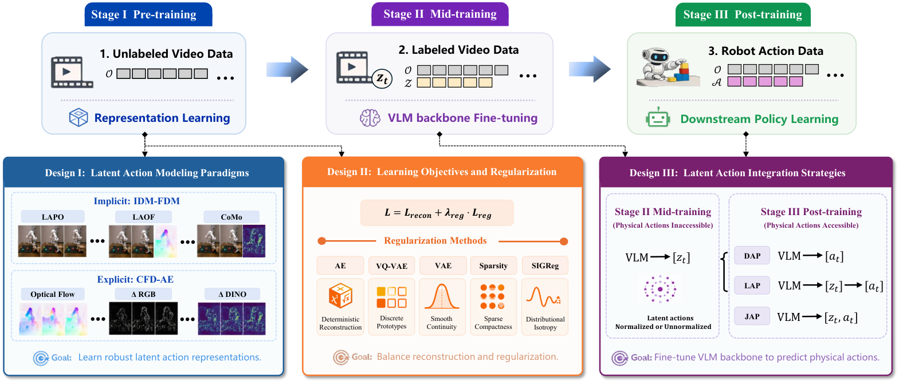
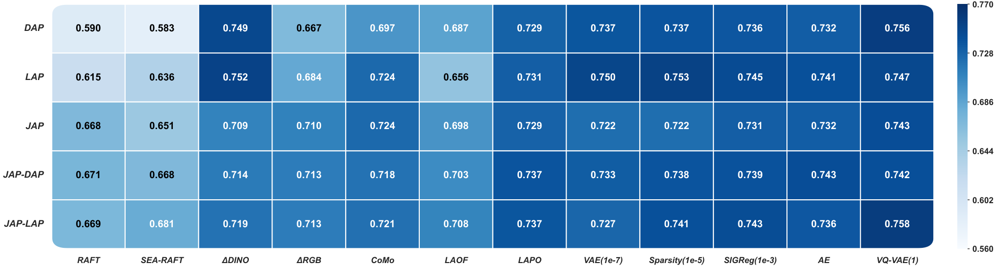
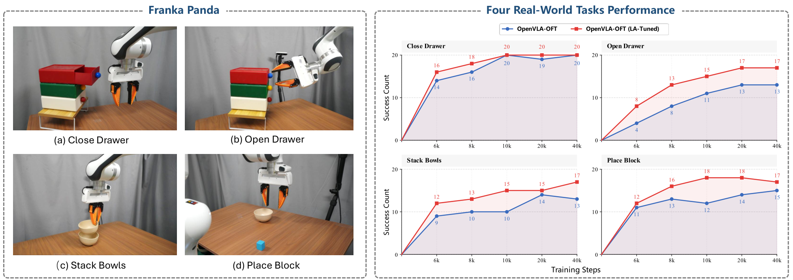

제출: 2026년 8월 20일 · 백본 Qwen3-VL-4B · 사전학습 59M 프레임 · 실로봇 Franka Panda
한 줄 요약 (TL;DR)
"영상만 보고 로봇 액션을 담은 잠재 벡터를 뽑아내는" Latent Action Model(LAM, 액션 라벨 없이 연속 프레임에서 행동을 요약하는 벡터를 학습하는 모델)의 방대한 설계 공간을 정리한 최초의 대규모 실증 연구. 3개 축(모델링 패러다임 / 정규화 / 통합 방식) 총 41가지 설계 선택을 통제 비교하고, 실로봇 4개 태스크 × 100회 롤아웃(총 400회)에서 OpenVLA-OFT 대비 성공률 64.75% → 79.25% (+14.5pp)로 "VLM 백본을 latent action으로 파인튜닝하는 것"이 다운스트림 정책의 강한 초기화가 됨을 입증. 핵심 처방: LAPO + VAE 정규화(λ=10-7) + latent 차원 32 + JAP 액션 헤드.
1배경 · 문제의식
Latent action(잠재 액션 — 로봇의 실제 관절 명령 대신, 두 프레임 사이의 "행동 의미"를 압축한 저차원 벡터)은 라벨 없는 인터넷 영상까지 사전학습에 끌어올 수 있어 VLA(Vision-Language-Action, 시각·언어·행동을 하나로 잇는 로봇 정책 모델) 확장의 핵심 도구로 떠올랐다. 그러나 지난 2년간 LAPO, LAOF, CoMo, GENIE, UniVLA 등 방법들이 쏟아지면서, 각 논문마다 백본·데이터·평가 프로토콜이 달라 "무엇이 진짜 성능을 좌우하는지"가 불투명해졌다.
저자들은 이를 정리하기 위해 통일된 학습·평가 파이프라인 위에서 41개 설계 선택을 하나씩 켜고 꺼가며(controlled ablation) 어떤 요소가 다운스트림 로봇 성능에 실제로 기여하는지 정량화한다. 논문은 새 모델 제안이 아니라 "레시피 정리"가 목표다.
2핵심 Contribution
최초의 통합 LAM 설계 공간 실증 연구 — 기존 방법을 IDM-FDM(암시적)과 CFD-AE(명시적)이라는 두 프레임워크로 재구성하고, 3개 축(패러다임·정규화·통합) 41개 선택을 동일 조건에서 비교.
확실한 승자 규명 — LAPO가 여전히 가장 강한 베이스라인(평균 0.7327), 의미 특징 차분 ΔDINO(DINOv2 특징 공간에서 두 프레임 뺄셈)가 근접 2위(0.7280). optical flow 기반(RAFT/SEA-RAFT)은 오히려 부진.
왜 이 구분이 중요한가: "행동"이라는 추상적 개념을 모델이 어디에서 추출하느냐가 다르다. 하나는 "다음 프레임을 얼마나 잘 예측하느냐"로 간접 학습, 다른 하나는 "두 프레임 차이 자체"를 직접 압축한다. 마치 스포츠 코칭에서 "다음 자세를 맞춰봐" vs "이 두 스냅샷의 차이를 정리해봐"의 차이.
(A) IDM-FDM (Implicit) — IDM(Inverse Dynamics Model, 두 프레임을 입력받아 그 사이 액션을 추정하는 모델)이 (ot, ot+1) → z를 만들고, FDM(Forward Dynamics Model, 현재 관찰 + 액션으로 미래 관찰을 예측하는 모델)이 (ot, z) → ôt+1을 복원하는 방식으로 z가 병목이 되어 "액션 정보"를 담게 강제. 대표 사례: LAPO(가장 단순한 IDM-FDM 베이스라인), LAOF(optical flow를 보조 감독으로 추가), CoMo(shortcut 방지를 위해 IDM 입력을 미래 프레임 대신 특징 차분으로 교체).
(B) CFD-AE (Explicit) — Continuous Feature Difference AutoEncoder. 미래 프레임 생성 대신 "연속 프레임의 미리 정의된 모션 신호"(픽셀 차이 ΔRGB, DINOv2 의미 특징 차이 ΔDINO, RAFT/SEA-RAFT의 optical flow)를 오토인코더로 압축·복원. 즉 액션 추출과 프레임 합성을 분리.
Qwen3-VL-4B 백본, 동일 59M 프레임에 자동 생성 latent action 라벨
Stage III 다운스트림
LIBERO 4 suite / LIBERO-Plus / RoboTwin2.0 12 태스크 / 실로봇 Franka Panda 4 태스크 × 50 데모
인코더 규모
IDM/FDM 각각 700M spatiotemporal Transformer (24 블록), 입력 224×224
4실험 결과
7가지 LAM 패러다임 정면 비교 (Table II)
방법
LIBERO
LIBERO-Plus
RoboTwin2.0
Avg
LAPO
0.910
0.437
0.851
0.733
ΔDINO
0.921
0.430
0.833
0.728
CoMo
0.908
0.397
0.845
0.717
ΔRGB
0.880
0.387
0.825
0.697
LAOF
0.888
0.354
0.830
0.691
SEA-RAFT
0.802
0.326
0.802
0.643
RAFT
0.780
0.342
0.806
0.643
가장 단순한 LAPO가 여전히 최강. Optical flow(RAFT/SEA-RAFT)는 노이즈 교란(LIBERO-Plus)에서 특히 취약. ΔDINO는 사전학습된 의미 특징의 강한 유도편향 덕에 근접 2위.
실로봇 — LA-Tuned VLM (Franka Panda 4 태스크)
모델
성공/시도
성공률
10k step 시점
40k step 시점
OpenVLA-OFT (baseline)
259 / 400
64.75%
—
76.25%
OpenVLA-OFT (LA-Tuned, Qwen3-VL 백본)
317 / 400
79.25%
85.0%
—
4개 태스크(서랍 여닫기, 그릇 쌓기, 블록 배치) × 100 롤아웃. +14.5pp 개선, 게다가 4배 빠른 수렴. task-무관 방해물에 대한 강건성도 향상.
시뮬레이션 벤치 요약
4 suite의 LIBERO(원본, in-distribution), RobotInit 교란이 추가된 LIBERO-Plus(강건성 평가), 양팔 조작 RoboTwin2.0(50태스크 중 12개 선정)에서 일관되게 LAPO 계열이 우세. 특히 강건성 축에서 optical flow 계열이 크게 뒤처짐.
5Ablation (핵심 처방)
Latent 차원 dz: 8/16/32/64/128/256/512/1024 스윕 결과 dz=32가 최적. 7-DoF 단일 팔·14-DoF 양팔 모두에서 균형. 너무 작으면 정보 부족, 너무 크면 shortcut(잠재가 프레임을 통째로 인코딩).
정규화 방법 vs 강도: "어떤 정규화(VAE / Sparsity / SIGReg)"보다 "정규화 강도(λ)의 적절한 튜닝"이 훨씬 중요. 권장: VAE λ=10-7 (단순함). 제로샷 일반화가 결정적이면 VQ-VAE λ=1.
Latent 정규화(normalization): 사전학습에서 정규화가 적절하면 불필요 — 정규화하지 않은 편이 평균 +0.0115 개선. (파이프라인이 단순해짐.)
액션 통합 방식:JAP > LAP >> DAP. latent action은 사전학습 목표로만 쓰고 버리지 말고, 다운스트림 학습 내내 계속 예측되도록 유지해야 함.
Proxy 지표 신뢰성:FDM 복원 지표(SSIM Gain, MSE Gain)는 다운스트림 성공률과 Pearson 상관이 강함(모델 스크리닝 유용). 반면 probe 지표(선형 회귀로 액션 예측 가능성 측정)는 상관 약함. 다만 서로 다른 latent 차원 간 fine-grained 랭킹엔 부적합.
Optical flow의 놀라운 실패: RAFT/SEA-RAFT는 노이즈 교란에서 특히 부진. 명시적 모션 신호가 오히려 무관한 카메라·배경 움직임까지 잡아버림.
VLM 파인튜닝 스케일링: 59M 프레임 영상 파인튜닝은 데이터·계산 스케일에 대해 성능이 매끄럽게 증가하는 스케일링 법칙을 보임(Fig. 9).
6핵심 Figure / Table

Figure 2 — LAM 통합 프레임워크와 설계 공간. IDM-FDM(암시적, 미래 프레임 복원 병목으로 latent를 학습)과 CFD-AE(명시적, ΔRGB·ΔDINO·optical flow 등 미리 정의된 모션 신호를 오토인코딩)의 두 축, 그 위에 정규화(축 II)·액션 헤드 통합(축 III)이 얹히는 3차원 41개 설계 공간. (출처: arXiv:2608.19613)

Figure 4 — DAP / LAP / JAP 액션 헤드 아키텍처. DAP는 latent를 사전학습 후 버리고, LAP는 VLM→z→a의 순차 계층, JAP는 공유 특징에서 z와 물리 액션 a를 병렬 예측. 실험 결과 JAP가 최고, latent가 다운스트림 학습 내내 살아있는 것이 관건임을 보임. (출처: arXiv:2608.19613)

Figure 10 — 실로봇 LA-Tuned 결과. OpenVLA-OFT를 latent action으로 파인튜닝한 Qwen3-VL 백본으로 교체하면 4 태스크 평균 성공률 64.75% → 79.25% (+14.5pp), 게다가 10k step만에 이미 baseline의 40k step을 넘김. (출처: arXiv:2608.19613)
Table II — 논문 중심 표. 7개 LAM 패러다임을 동일 조건에서 통제 비교한 결과로 "무엇이 진짜 좋은가"에 대한 첫 답. LAPO가 여전히 최강, ΔDINO 근접, optical flow 부진.
권장 레시피 (논문 결론): 1) 모델링 = LAPO (또는 의미 특징 활용 가능시 ΔDINO), 2) 정규화 = VAE, λ=10-7, 3) latent 차원 = 32, 4) latent 정규화 = 없음, 5) 액션 헤드 = 영상만 있을 때 LAP, 로봇 데이터 있을 때 JAP-LAP, 6) 모델 선별 지표 = SSIM/MSE Gain (probe 지표 X).